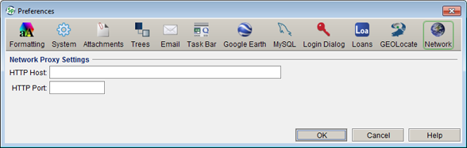

Network Preferences Network Preferences
Network Preferences Network Preferences
Network Preference
If your institution is using a proxy to access the internet webservices, including GEOLocate, may not work correctly. Fill-in the Network information for webservices access the internet through the proxy. Contact your IT administrator for the Network values.